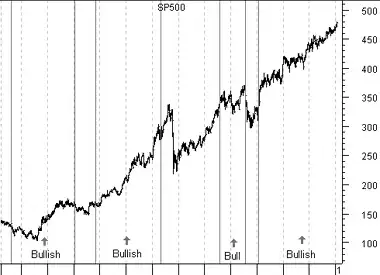

Introduction - Market Indicators
Market Indicators
All of the technical analysis tools discussed up to this point were calculated using a security's price (e.g., high, low, close, volume, etc). There is another group of technical analysis tools designed to help you gauge changes in all securities within a specific market. These indicators are usually referred to as "market indicators," because they gauge an entire market, not just an individual security. Market indicators typically analyze the stock market, although they can be used for other markets (e.g., futures).
While the data fields available for an individual security are limited to its open, high, low, close, volume (see page ), and sparse financial reports, there are numerous data items available for the overall stock market. For example, the number of stocks that made new highs for the day, the number of stocks that increased in price, the volume associated with the stocks that increased in price, etc. Market indicators cannot be calculated for an individual security because the required data is not available.
Market indicators add significant depth to technical analysis, because they contain much more information than price and volume. A typical approach is to use market indicators to determine where the overall market is headed and then use price/volume indicators to determine when to buy or sell an individual security. The analogy being "all boats rise in a rising tide," it is therefore much less risky to own stocks when the stock market is rising.
Categories of market indicators
Market indicators typically fall into three categories: monetary, sentiment, and momentum.
Monetary indicators concentrate on economic data such as interest rates. They help you determine the economic environment in which businesses operate. These external forces directly affect a business' profitability and share price.
Examples of monetary indicators are interest rates, the money supply, consumer and corporate debt, and inflation. Due to the vast quantity of monetary indicators, I only discuss a few of the basic monetary indicators in this book.
Sentiment indicators focus on investor expectations--often before those expectations are discernible in prices. With an individual security, the price is often the only measure of investor sentiment available. However, for a large market such as the New York Stock Exchange, many more sentiment indicators are available. These include the number of odd lot sales (i.e., what are the smallest investors doing?), the put/call ratio (i.e., how many people are buying puts versus calls?), the premium on stock index futures, the ratio of bullish versus bearish investment advisors, etc.
"Contrarian" investors use sentiment indicators to determine what the majority of investors expect prices to do; they then do the opposite. The rational being, if everybody agrees that prices will rise, then there probably aren't enough investors left to push prices much higher. This concept is well proven--almost everyone is bullish at market tops (when they should be selling) and bearish at market bottoms (when they should be buying).
The third category of market indicators, momentum, show what prices are actually doing, but do so by looking deeper than price. Examples of momentum indicators include all of the price/volume indicators applied to the various market indices (e.g., the MACD of the Dow Industrials), the number of stocks that made new highs versus the number of stocks making new lows, the relationship between the number of stocks that advanced in price versus the number that declined, the comparison of the volume associated with increased price with the volume associated with decreased price, etc.
Given the above three groups of market indicators, we have insight into:
- The external monetary conditions affecting security prices. This tells us what security prices should do.
- The sentiment of various sectors of the investment community. This tells us what investors expect prices to do.
- The current momentum of the market. This tells us what prices are actually doing.
Figure 35 shows the Prime Rate along with a 50-week moving average. "Buy" arrows were drawn when the Prime Rate crossed below its moving average (interest rates were falling) and "sell" arrows were drawn when the Prime Rate crossed above its moving average (interest rates were rising). This chart illustrates the intense relationship between stock prices and interest rates.
Figure 35

Figure 36 shows a 10-day moving average of the Put/Call Ratio (a sentiment indicator). I labeled the chart with "buy" arrows each time the moving average rose above 85.0. This is the level where investors were extremely bearish and expected prices to decline. You can see that each time investors became extremely bearish, prices actually rose.
Figure 36

Figure 37 shows a 50-week moving average (a momentum indicator) of the S&P 500. "Buy" arrows were drawn when the S&P rose above its 50-week moving average; "sell" arrows were drawn when the S&P fell below its moving average. You can see how this momentum indicator caught every major market move.
Figure 37

Figure 38 merges the preceding monetary and momentum charts. The chart is labeled "Bullish" when the Prime Rate was below its 50-week moving average (meaning that interest rates were falling) and when the S&P was above its 50-week moving average.
Figure 38
The chart in Figure 38 is a good example of the roulette metaphor. You don't need to know exactly where prices will be in the future--you simply need to improve your odds. At any given time during the period shown in this chart, I couldn't have told you where the market would be six months later. However, by knowing that the odds favor a rise in stock prices when interest rates are falling and when the S&P is above its 50-week moving average, and by limiting long positions (i.e., buying) to periods when both of these indicators are bullish, you could dramatically reduce your risks and increase your chances of making a profit.